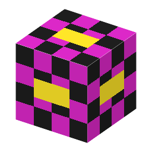

Test Power Source・ブロック・Testing
仮（まだ本物どおりでない所がある）

①子ども ゲームの確認のための、ふつうには作れないブロック。燃料なしで電気が出つづける。
②学生 クリエイティブ専用・レシピなし。機械の真下（となり）に置くと、1 MW を送る。試験場（/function semiconductor-lab:testworld）が機械の下に置く。本物の発電は、試験場の蒸気機関の区画で確かめる。
③大人 本物の世界に「燃料のいらない電源」はない。電気は、燃料・水の流れ・光などのエネルギーを変えて作る（エネルギー保存）。このブロックは確認を早くするための約束ごと。
④ガチ 研究室では、本物の電源の代わりに「安定化電源」を使って、装置だけを確かめることがある。試験場も同じ考え方。
（作り方のレシピは無い：拾う・掘る・ほかの方法）
（このアイテムを使うレシピは無い）